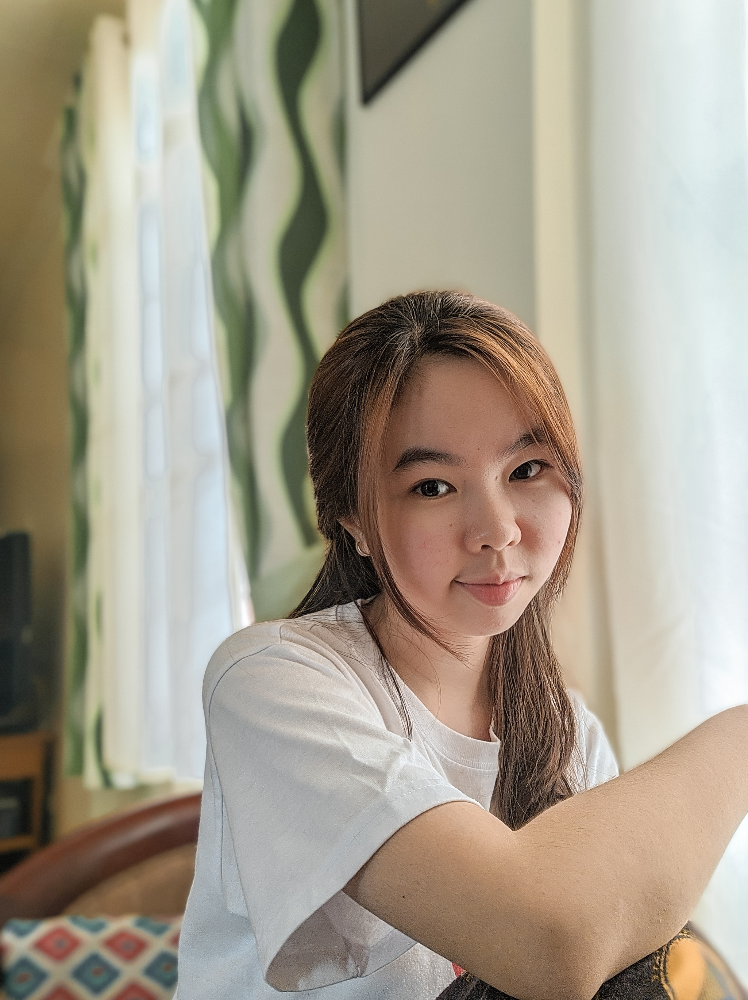
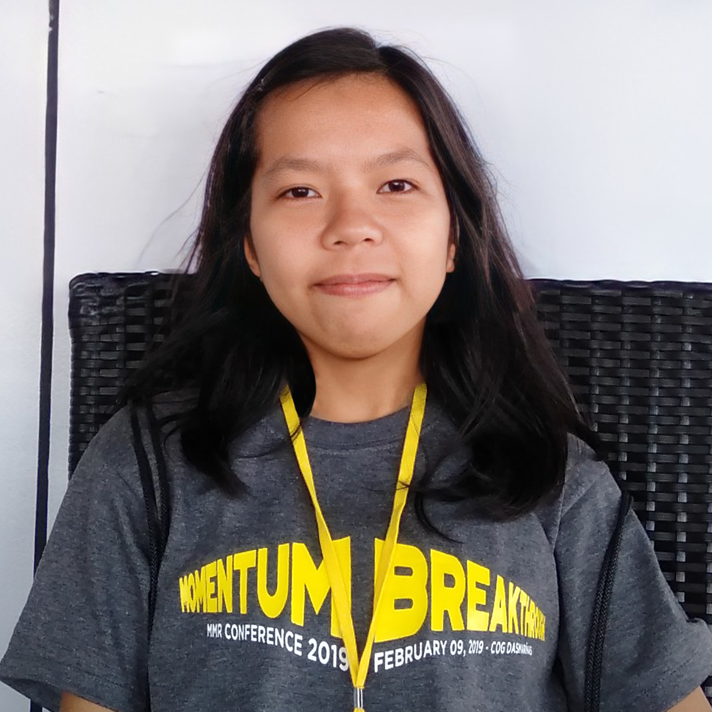
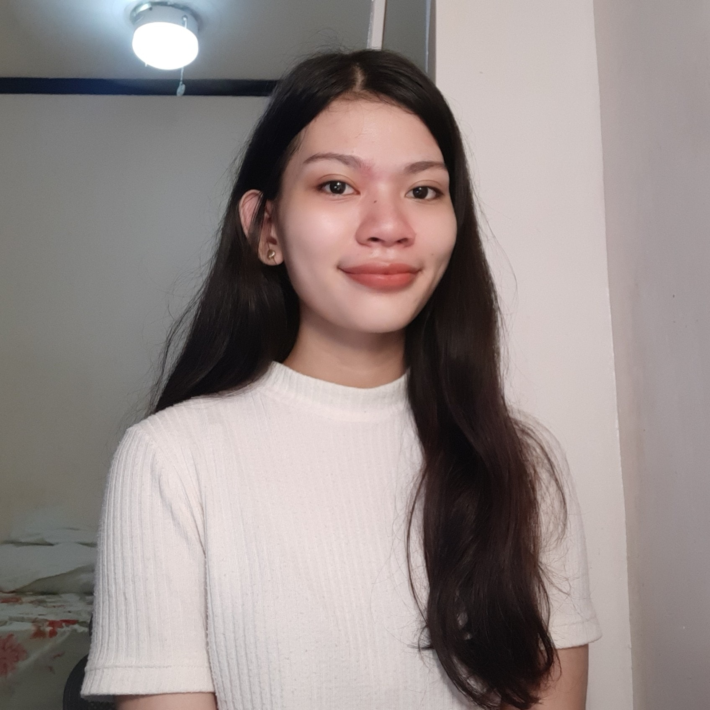
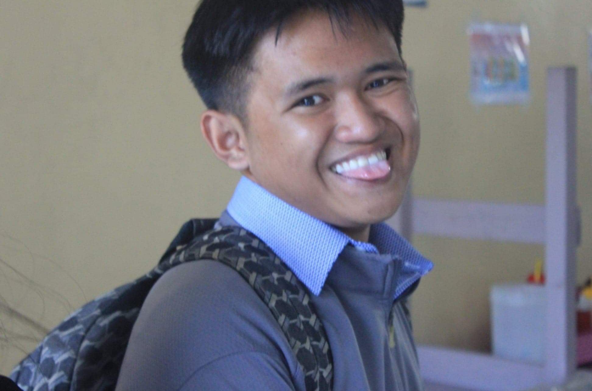

About Us
Bitty-is a web-based task organizer with the
aim to make task managing easier and hassle- free

Bitty-is a web-based task organizer with the
aim to make task managing easier and hassle- free
Came together by destiny, group of student who has
the same path of dreams.
|  |
Angely Mae DyCS Student"Do your best and let God do the rest."Angely is a 20 year old computer science student currently studying in Cavite State University with passion and interest in UI design as well as front-end development. She's an enthusiastic person who is driven to do her best and always look for ways to continuously improve herself as well as her work. Her favorite thing to do is to design UI and implement them using HTML, CSS and JavaScript, the reason why she chose computer science as her college program. |
|---|---|
Sophia GutierrezCS Student"I can do all things through Christ who strengthens me." Philippians 4:13Sophia Gutierrez is a 19-year-old computer science student at Cavite State University, Indang Campus. A passionate, committed person who's fond of photography, photo, and video editing. She chose the course because she is eager to learn more about web development, software engineering, and programming. She aspires to be a full-stack developer someday. |
 |
|  |
Precios Jewel MabungaCS Student"Strive for progress, not perfection"Jewel is a self-taught designer and a computer science student at Cavite State University. She have learnt a lot of the processes, concepts and theories of programming, as well as UX/UI Design through online courses, reading blogs and applying these to projects in her spare time. She is a big-picture thinker and enjoy working on projects end to end, from ideation all the way to development. She loves working with those who shares the same interests as her and wants to be sorrounded with ambitious and motivated people. |
Prince SimonsCS Student"Getting lost along a path is a part of finding the right path that you fully belong"Prince Fortes Simons a boy who lost himself in a course that he is not fully belong, that may lead to doubt himself and question his skills in programming, but still fighting and doing his best to survive every sem. At first he despise doing a website and programming work because he is not good at it but he remember that "Beginning is always the hardest" that's why he practice hard to improve and be a better person each day, to strive in a global competitive world. Once again My name is Prince Fortes Simons a boy once lost but finally find his right path that I fully belong and has a vision to be a successful full-stack developer in the near future. |
 |